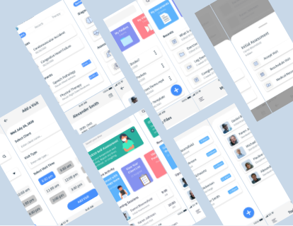
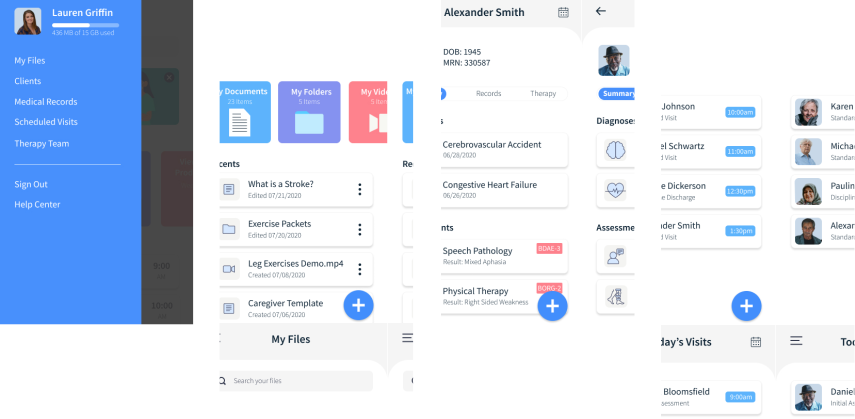
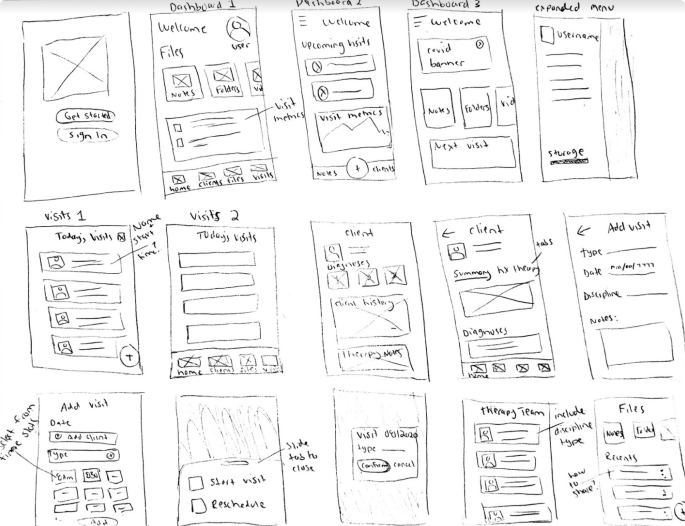
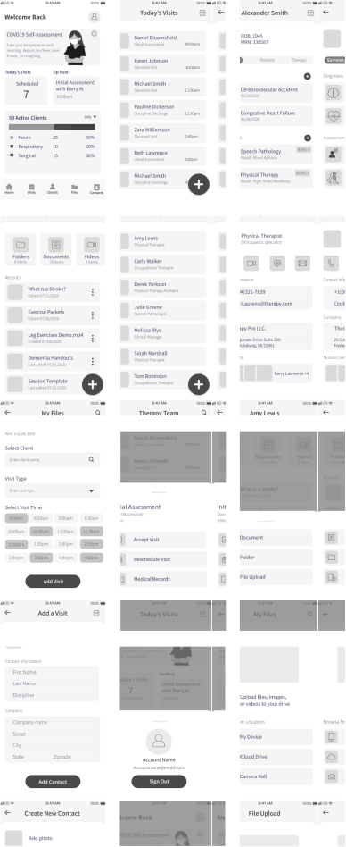
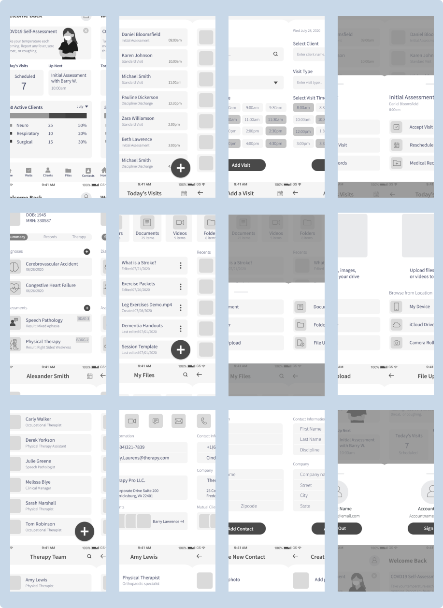
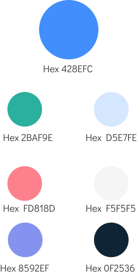
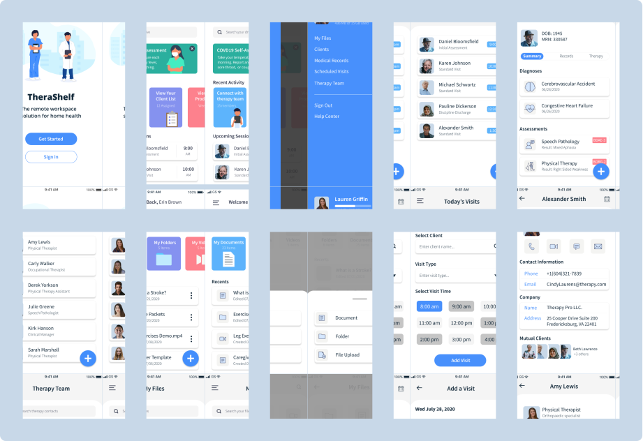

TheraShelf
Do therapy differently.
TheraShelf is a cloud storage workspace solution for home health therapists delivering remote rehabilitation services. Designed in response to the Covid19 outbreak.
My Role
Research
Brand & Identity
UX/UI Design
Deliverables
Surveys
Competitive Analysis
User Stories
Wireframes
Clickable Prototypes
Usability Testing
High Fidelity Mockups
Tools
Pen & Paper
Google Forms
Figma
The Problem
There has been an abrupt shift to a remote service model for rehabilitation therapies since the COVID19 outbreak. It is difficult to track clients,manage caseload, and organize therapy materials without the physical office space.
The Solution
TheraShelf includes features that allow therapists to manage caseloads, track client progress, organize treatment materials, and collaborate with other therapy professionals. It creates a streamlined, transparent experience from start to finish.
The Design Process
Surveys
A survey was conducted with 20 respondants to gain a better understanding of user’s experiences with cloud storage products. I included questions that explored specific motivations, feature rankings, and pain points. The key takeaways include:
Respondants also provided a ranking of most important features for a cloud storage product. Top features were considered carefully down the road when prioritzing user stories. They are logical choices to include in the MVP.
Competitive Analysis
An analysis was completed with some popular cloud storage products that are already on the market. Google Docs provided the largest array of features that could be used for multi-disciplinary collaboration, scheduling, and content creation. However, none of these features are designed specifically for therapists. There is still a considerable amount of effort required by the user to accomplish healthcare goals with this product.
While Constant therapy is designed for the therapy population, it's primary function is to provide therapy materials to the clients. There are absolutely no collaboration features, and the user is unable to create new content or customize content to the needs of each client.
View Full AnalysisPersonas
After completing my initial survey analysis, I had follow up conversations with two of the respondants. I gained a more thorough understanding of their frustations, goals, and attitudes towards cloud storage products. I developed personas to represent an inclusive and full spectrum representation of TheraShelf users. I would go on to reference these personas frequently when making design decisions for the product.
User Flows
I created user flows to represent how a user would interact with TheraSelf to accomplish the high priority user stories. From there, a site map was created to help organize the destinations for each of the user flows.
Wireframes
It was finally time to put pen to paper. I started by sketching out possible layouts for the product pages based on the main user flows. Rapid iterations allowed me to make some initial design decisions quickly and efficiently. I then created digital wireframes for my first round of usability testing.
  Put it to the Test
Using my low fidelity wire frames for reference, I created a clickable prototype in Figma. I completed remote usability testing with three participants to assess the effectiveness of the product design. They were presented with the following tasks:
Create a new account
View today’s visits
View a client’s chart
Assign a note to your client
The usability testing exposed several features that were problematic to the overall function of the product. These areas were revisited, tweaked, and/or replaced with more effective solutions.
The Dashboard and Toolbar
There was a bit of an overhaul to the dashboard page. The bottom toolbar was removed completely and a hamburger menu was added instead. This design uses space more effectively on the mobile screen while eliminating the need for ambiguous icons. The metrics were replaced with buttons to allow direct access to recent and/or most used features. Visuals were added to supplement the text information.

Making the Brand
It’s time to define the TheraShelf brand. When making branding decisions, I carefully considered the target audience, user personas, and overarching goals of the product. The overall feel of the brand is intended to promote healing, growth, and simplicity. These traits are ideal for a health care product that centers around the rehabilitation process.
Color Palette
The primary color for TheraShelf is a bright blue, which represents trust, tranqulity, and knowledge. Several of the secondary colors also fall in the blue and green families to communicate growth and healing. Strategic pops of color are used sparingly to highlight information in the product.
Typography
Both the primary brand typeface and complementary typeface are geometric sans-serif fonts. The typefaces are clean and easy to read at all sizes. It translates well from desktop to a mobile platform.
Preference Testing
I considered different configurations for the tab bar on the client overview page. Users were able to choose between the bubble feature or underline feature to highlight a specific tab during page navigation.
The majority of users preferred the bubble feature since it was clearer and more eye catching compared to the underline option. The design element was implemented throughout the product.
Prototyping
A high fidelity prototype was created in Figma. I was careful to include the visual elements defined by the branding guidlines and preference testing. The visual elements were combined with the strategic layout of the product page to create an intuitive user experience.
Another Round of Testing
I completed another round of remote usability testing with the high fidelity prototype. This time the tasks included:
Create a new account
View today’s visits
View a client’s chart
Assign a note to your client
Look up a therapist’s email address
Searching for Content
I received some feedback about inconsistencies when searching for content. This was an easy fix. The search icon was eliminated and replaced with a full search bar on the file page. This change improves element consistency from page to page. It also ensures that the user expectations are met throughout the product.
Time to Wrap Things Up
What's Next
Next steps would be to implement more of the low priority user stories to make a complete product with specialized features for health care professions. For example, adding templated notes will allow the users to be more efficient and organized when creating content. I would follow that up with another round of usability testing and revisions as needed.
My Take Aways
This project alowed me to mature and gain strong footing as a UX designer. I learned to check my personal expectations throughout the different phases of the design process. My ideations did not necessarily translate as clearly and effectively as I intended during user testing. However, I was able to embrace the design process and rely on user feedback to work through several iterations of the product. Designs that fall back on data and tangible research create the best user experience.
Final Thoughts
TheraShelf underwent some major and minor changes to the design elements and layout. At the end of the day, TheraShelf finds its place amoungst other cloud storage products by targeting a niche health care audience. It provides creative solutions to our new remote world.